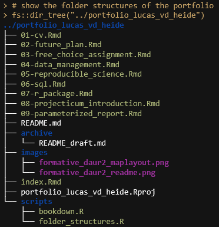
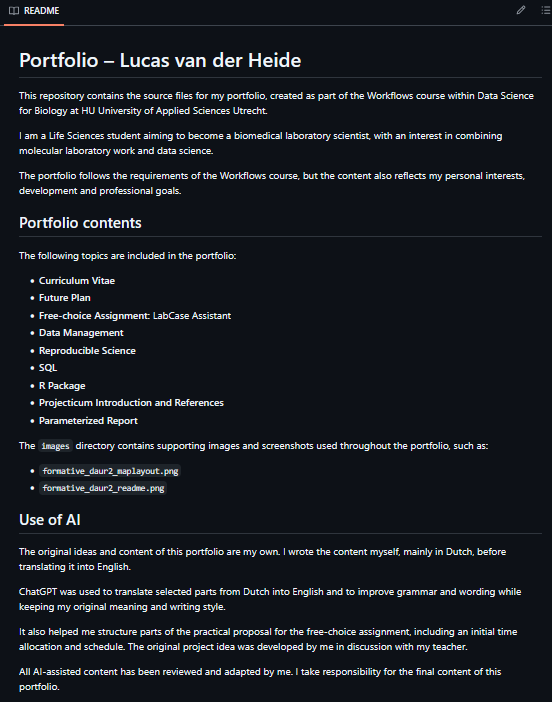

5 Data Management
In this chapter, I show the folder structures I created for both the formative RNA-seq assignment from the DAUR2 module of Data Science for Biology 1 and for this portfolio.
I also include the README files, which explain the folder structures and the choices I made.
5.1 DAUR2 RNA-seq assignment
5.2 Portfolio
5.2.1 Folder structure
The folder structure planned for my portfolio repository is shown below.

Figure 3: Portfolio folder structure
5.2.2 README
The README shown below explains the organisation of my portfolio repository. Some of the folders shown here relate to chapters that are not yet included in this version of the portfolio. These chapters will be added later, following the schedule for the Workflows course.

Figure 4: Portfolio README